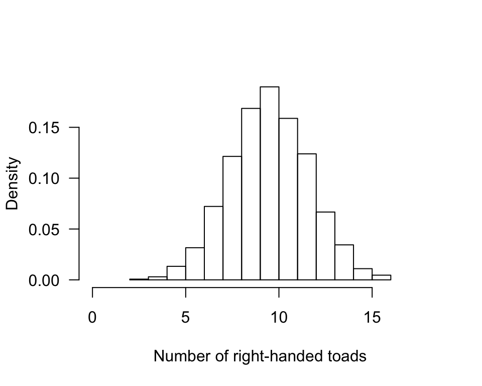
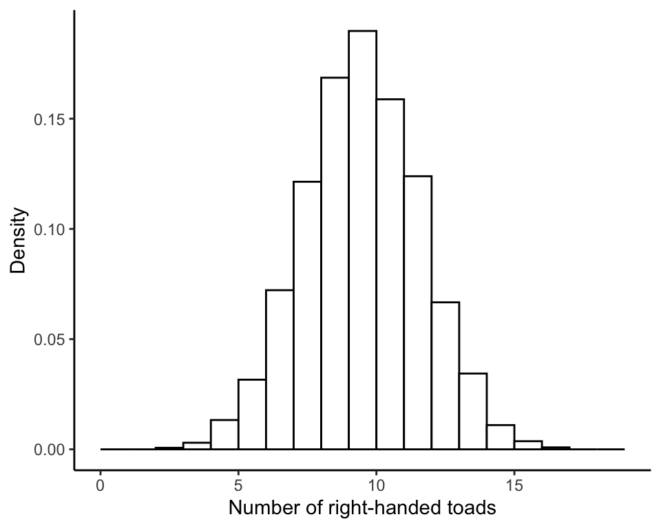
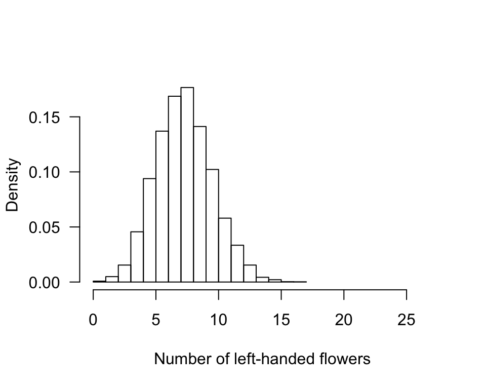
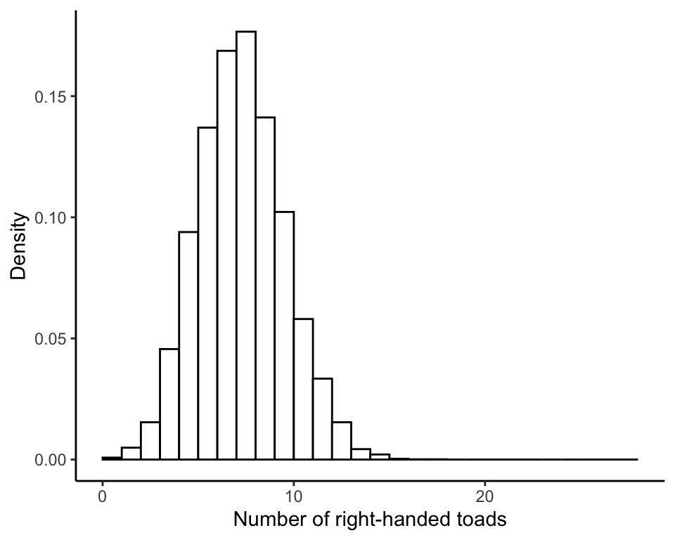

R code for example in Chapter 6:
Hypothesis testing
We used R to analyze all examples in Chapter 6. We put the code here so that you can too.
New methods on this page
-
Take a random sample of a categorical variable having two possible outcomes from a theoretical population of known probabilities:
sample(c("L", "R"), size = 18, prob = c(0.5, 0.5), replace = TRUE) -
Create a loop to sample repeatedly a known population to use to generate an approximate null distribution for a test statistic:
for(i in 1:10000){ temporarySample = sample(c("L", "R"), size = 18, prob = c(0.5, 0.5)) replace = TRUE) sum(temporarySample == "R") }
Load the required packages
We’ll use the ggplot2 package to draw some of the plots. It needs to be loaded only once per session.
library(ggplot2)Example 6.2. Toads
Obtain the null distribution for the test statistic (the number of right-handed toads out of 18).
A very large number of samples
Sample \(n = 18\) toads from a theoretical population in which left- and right- handed individuals occur with equal probability (as stipulated by the null hypothesis). For each sample, the number of right-handed toads is calculated and saved in a vector named results18 (the samples themselves are not saved). The results vector is initialized before the loop. The term results18[i] refers to the ith element of results18, where i is a counter. So many iterations might take a few minutes to run on your computer.
results18 <- vector()
for(i in 1:10000){
tempSample <- sample(c("L", "R"), size = 18, prob = c(0.5, 0.5), replace = TRUE)
results18[i] <- sum(tempSample == "R")
}Save results18 also as a factor with 19 levels, representing each possible integer outcome between 0 and 18. This step is for tables and graphs only – it makes sure that all 19 categories are included in tables and graphs, even categories with no occurrences.
factor18 <- factor(results18, levels = 0:18)The relative frequency distribution
Tabulate outcomes in the random sampling process (Table 6.2-1). This is the null distribution. Your results will be similar but not identical to the numbers in Table 6.2-1 because 10,000 times is not large enough for extreme accuracy. The table() command calculates the frequencies, and dividing by the length of results18 (i.e., the number of elements in the vector, equal to the number of iterations in the loop) yields the proportions (relative frequencies).
nullTable <- table(factor18, dnn = "nRightToads")/length(factor18)
data.frame(nullTable)## nRightToads Freq
## 1 0 0.0000
## 2 1 0.0000
## 3 2 0.0007
## 4 3 0.0030
## 5 4 0.0133
## 6 5 0.0316
## 7 6 0.0722
## 8 7 0.1214
## 9 8 0.1686
## 10 9 0.1898
## 11 10 0.1588
## 12 11 0.1239
## 13 12 0.0667
## 14 13 0.0344
## 15 14 0.0110
## 16 15 0.0037
## 17 16 0.0009
## 18 17 0.0000
## 19 18 0.0000Histogram of the null distribution
This plots the frequency distribution of the number of right-handed toads out of \(n = 18\) independent trials (Figure 6.2-1). Setting freq = FALSE causes hist to graph density of observations rather than frequency. In this case, height of bars indicates relative frequency if bars are one unit wide (as in the present case).
hist(results18, right = FALSE, freq = FALSE, las = 1,
xlim = c(0,18), xlab = "Number of right-handed toads", main = "")
or
ggplot(data.frame(results18), aes(x = results18)) +
geom_histogram(aes(y = ..density..), fill = "white", col = "black",
boundary = 0, closed = "left", bins = 19, binwidth = 1) +
scale_x_continuous(limits = c(0,19)) +
labs(x = "Number of right-handed toads", y = "Density") +
theme_classic()
Probability of 14 or more
Calculate the fraction of samples in the null distribution having 14 or more right-handed toads. This won’t be the exact probability of 14 or more because 10,000 times is not large enough for extreme accuracy.
frac14orMore <- sum(results18 >= 14)/length(results18)
frac14orMore## [1] 0.0156\(P\)-value
Calculate the approximate \(P\)-value. This won’t be exact because 10,000 times is not large enough for extreme accuracy.
2 * frac14orMore## [1] 0.0312Example 6.4. Mirror-image flowers
Determine the null distribution for the test statistic, the number of left-handed flowers out of 27.
A very large number of samples
Obtain a very large number of samples of 27 individuals from a theoretical population in which L and R occur in the ratio 1:3, as specified by the null hypothesis. For each sample, the number of “L” is counted and saved in a vector named results27 (the samples themselves are not saved).
results27 <- vector(mode = "numeric")
for(i in 1:10000){
tempSample <- sample(c("L", "R"), size = 27, prob = c(0.25, 0.75),
replace = TRUE)
results27[i] <- sum(tempSample == "L")
}Save the results also as a factor. This is to ensure that all categories between 0 and 27 are included in tables and graphs, even those that did not occur in the sampling process.
results27fac <- factor(results27, levels = 0:27)The relative frequency distribution
Tabulate the relative frequency distribution of outcomes. To get relative frequencies, use table() to get frequencies and then divide by the total number of replicates. Your results will be similar but not identical to the numbers in the Chapter because 10,000 iterations is not large enough for extreme accuracy.
nullTable <- table(results27fac, dnn = "nRightFlowers")/length(results27fac)
data.frame(nullTable)## nRightFlowers Freq
## 1 0 0.0008
## 2 1 0.0049
## 3 2 0.0154
## 4 3 0.0456
## 5 4 0.0939
## 6 5 0.1370
## 7 6 0.1687
## 8 7 0.1766
## 9 8 0.1412
## 10 9 0.1022
## 11 10 0.0580
## 12 11 0.0334
## 13 12 0.0154
## 14 13 0.0043
## 15 14 0.0021
## 16 15 0.0003
## 17 16 0.0001
## 18 17 0.0001
## 19 18 0.0000
## 20 19 0.0000
## 21 20 0.0000
## 22 21 0.0000
## 23 22 0.0000
## 24 23 0.0000
## 25 24 0.0000
## 26 25 0.0000
## 27 26 0.0000
## 28 27 0.0000Histogram of the null distribution
Draw a histogram of the null distribution of the the number of left-handed flowers out of 27 (Figure 6.4-1). Setting freq = FALSE causes hist to graph density of observations rather than frequency. In this case, height of bars indicates relative frequency if bars are one unit wide (as in the present case).
hist(results27, right = FALSE, freq = FALSE, las = 1,
xlim = c(0,27), xlab = "Number of left-handed flowers", main = "")
Or
ggplot(data.frame(results27), aes(x = results27)) +
geom_histogram(aes(y = ..density..), fill = "white", col = "black",
boundary = 0, closed = "left", bins = 28, binwidth = 1) +
scale_x_continuous(limits = c(0,28)) +
labs(x = "Number of right-handed toads", y = "Density") +
theme_classic()
Probability of 6 or fewer
Calculate the fraction of results in the null distribution having 6 or fewer left-handed flowers.
frac6orLess <- sum(results27 <= 6)/length(results27)
frac6orLess## [1] 0.4663\(P\)-value
Calculate the \(P\)-value. This won’t be exact because 10,000 times is not large enough for extreme accuracy
2 * frac6orLess## [1] 0.9326